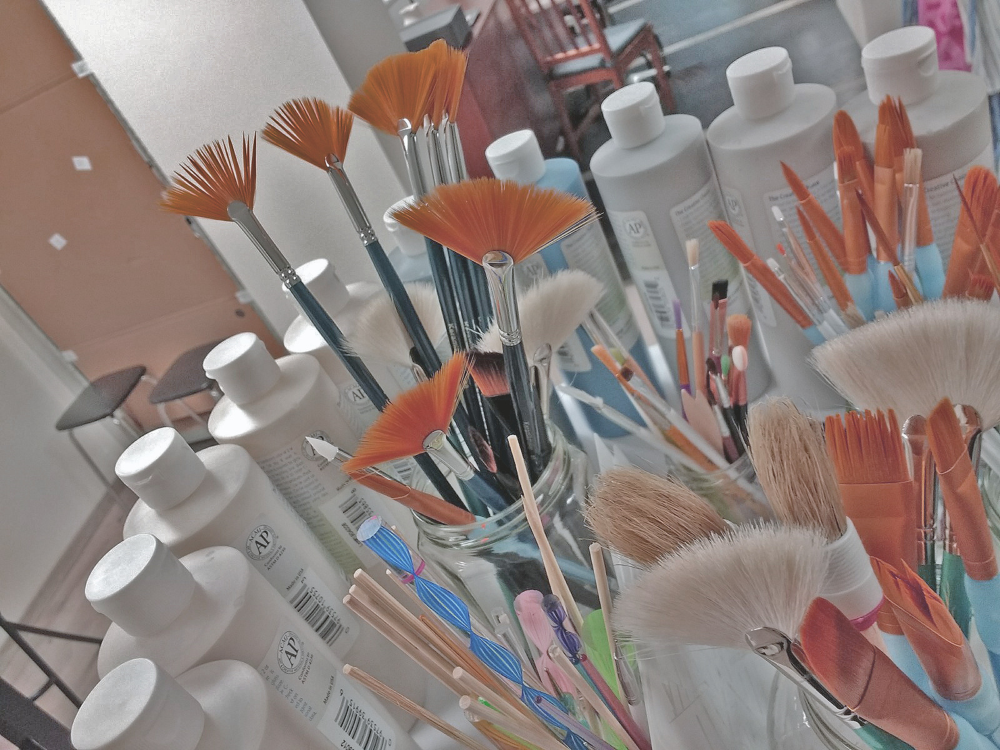

Herzlich Willkommen!
Bei uns kannst du dir dein Keramikstück aussuchen und dieses mit von uns gestellten Farben und Pinseln bemalen. Von klassischen Alltagsgegenständen wie Teller und Tassen bis hin zu Dekoartikeln wie Fotorahmen oder Spardosen ist alles möglich. Deiner Kreativität sind keine Grenzen gesetzt!